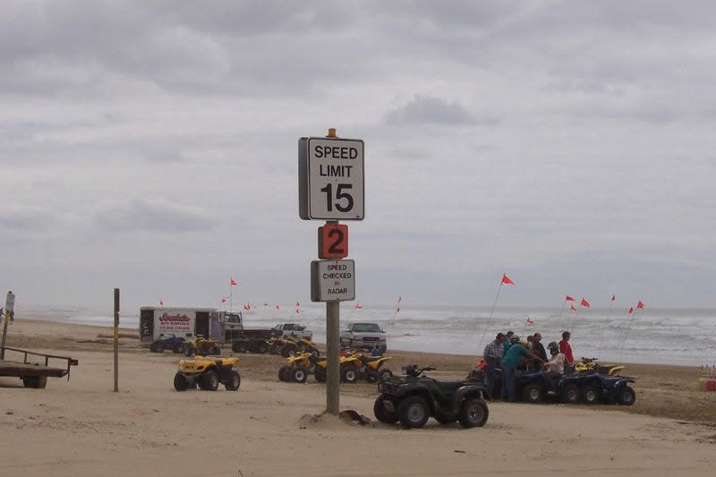

Do You Need 4WD at Oceano Dunes?
Short answer: not to get on the beach, but yes to get anywhere good. Passenger cars do fine on the firm sand at the north end. Four wheel drive is what the park recommends past Post 2, where the camping and the riding are. Here is where that line falls, and what it costs to be on the wrong side of it.
Where the Line Falls
The beach is one long strip and it gets softer as you go south. Post 2 sits one mile south of the Pier Avenue entrance and marks the start of the OHV area.
- North of Post 2: passenger cars are fine. The northern portion of the beach is easy driving for ordinary cars on firm sand.
- Past Post 2: four wheel drive is recommended. That is the park's own recommendation for reaching the camping and OHV areas, not ours.
- Camping on the sand: everything is south of Post 2, so plan on 4WD.
- The real variable is the tide, not the badge on your tailgate. Firm wet sand carries almost anything. Dry sand stops trucks.

Doing It in a Regular Car
A stock vehicle on stock tires can absolutely do Oceano. It just has to be done on the park's terms rather than yours.
- Arrive at low tide. The hard pack is the road. Everything about a 2WD day depends on timing, so check the tide chart before you commit to a time.
- Stay on the dark, wet sand. That is where the traction is. Dry sand near the dunes is where 2WD trips end.
- Do not stop on soft ground. Momentum is most of what you have. Pick where you park before you slow down.
- Skip the deep stuff entirely. No climbs, no bowls. The beach drive is the adventure.
- Know the exit plan. Beach towing is available if it goes wrong, and it is not free. If conditions look bad when you arrive, camping north of the OHV area is the easier day.
Airing Down Is the Whole Trick
More than four wheel drive, more than tires, more than anything else you can do in the parking lot. Dropping pressure spreads the tire's footprint so it floats instead of digging.
- 15 to 18 PSI is the working range for the beach.
- Do not go below 15. Past that you risk rolling a tire off the bead, which turns a good day into a recovery.
- Air back up before the highway home. Driving to town on 15 PSI wrecks tires. Bring a gauge and plan on the air station or your own compressor.
- 4-high for the beach, 4-low for the dunes, if you have it.
When You Get Stuck
Everyone does eventually. What separates a five minute problem from a tow bill is what you do in the first thirty seconds.
- Never spin the wheels. Spinning digs a grave. The moment the tires break loose, stop.
- Air down further if you have not already, then dig the sand out from around all four tires.
- Front wheels straight. Recruit friends to push, and drive gently forward or backward. Gentle is the whole instruction.
- Pour water on the sand in front of your tires. Wet sand packs hard. It is the oldest unsticking trick on the dunes and the ocean is right there. Bring jugs or a bucket.
- Traction boards earn their space in the truck if you have them.
- Bring a tow strap. Most recoveries take two vehicles, and the person who helps you today is the reason someone helps you next time.
Before You Load Up
Time the Tide
The hard pack is the difference between cruising and digging. Drive in near low tide and most of this page stops mattering.
Check the Creek
Arroyo Grande Creek sits between the Pier Avenue entrance and Post 2. When it is running, the crossing decides the trip before your tires do.
Build the Plan
Tell the planner what you drive and it works the tide windows, the air down and the camp setup into one plan you can print.